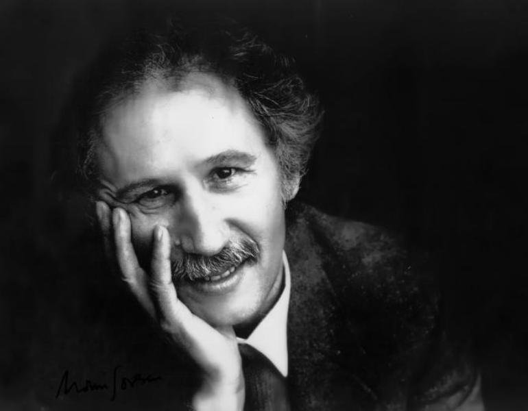

TEZĂ DE DOCTORAT · DRAMATURGIEMarin Sorescu — Dramaturgul
Analiză a specificității dramaturgiei soresciene — de la trilogia ontologică (Iona, Paracliserul, Matca) la drama istorică modernă, prin prisma ironiei filosofice și a inovației tehnice.
CITEȘTE LUCRAREA → TEZĂ DE DOCTORAT · POEZIE
TEZĂ DE DOCTORAT · POEZIE
Marin Sorescu și semnul ironiei
Studiu asupra ironiei ca modalitate fundamentală de expresie în opera lui Marin Sorescu — de la parodie la La Lilieci, ironia ca formă de supraviețuire și rezistență estetică.
CITEȘTE LUCRAREA →